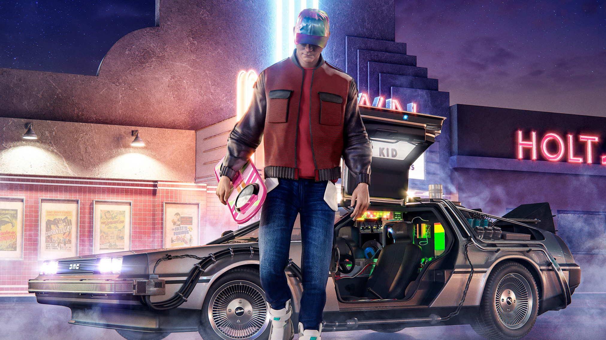

The DeLorean Time Machine
One of the most iconic elements of "Back to the Future" is the DeLorean time machine. This sleek, stainless-steel sports car, modified by Doc Brown, is not just a vehicle but a symbol of adventure and innovation.
Design and Features
The DeLorean time machine features:
- Flux Capacitor: The key component for time travel, as Doc Brown explains, “It’s what makes time travel possible.”
- Mr. Fusion: Located on the back of the car, this device converts household waste into the energy needed for time travel.
- Time Circuits: Controls the date and time of travel, allowing Marty and Doc to navigate different eras.
- Hover Conversion: In the second film, the DeLorean is upgraded to hover for travel in 2015.
The Legacy of the DeLorean
The DeLorean time machine has transcended the film to become a symbol of innovation and nostalgia. It remains a popular feature at fan conventions, museums, and in various memorabilia. Its image is forever etched in popular culture, representing the limitless possibilities of time travel.